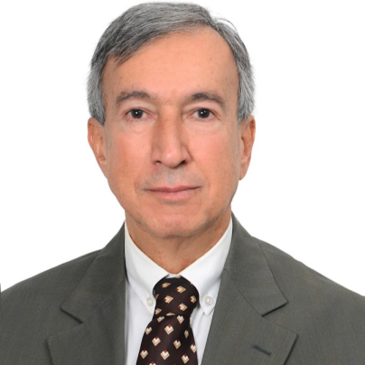

Honorary Chairs

Prof. Refik BURGUT
Maltepe University, TÜRKİYE
Former President of EMR (2003-2005)

Prof. Ergun KARAAGAOGLU
Hacettepe University, TÜRKİYE
Former President of EMR (2009-2011)
Conference Chair

Assoc. Prof. Gökmen ZARARSIZ
Erciyes University, TÜRKİYE
Local Organizing Committee (alphabetic order)
- Necla Koçhan, Secretary -- IBG (Izmir Biomedicine and Genome Center), TÜRKİYE
- Dinçer Göksülük, Member -- Erciyes University, TÜRKİYE
- Erdal Coşgun, Member -- Microsoft Genomics, USA
- Göknur Giner, Member -- Walter and Eliza Hall Institute of Medical Research, AUSTRALIA
- Gözde Ertürk Zararsız, Member -- Erciyes University, TÜRKİYE
- İlker Ünal, Member -- Çukurova University, TÜRKİYE
- Konstantinos Fokianos, Member -- University of Cyprus, CYPRUS
- Merve Kaşıkcı, Member -- Hacettepe University, TÜRKİYE
- Mustafa Çavuş, Member -- Eskişehir Technical University, TÜRKİYE
- Osman Dağ, Member -- Hacettepe University, TÜRKİYE
- Sevilay Karahan, Member -- Hacettepe University, TÜRKİYE
- Vilda Purutçuoğlu, Member -- Middle East Technical University, TÜRKİYE
Scientific Committee (alphabetic order)
- Ahmet Öztürk, Prof. -- Erciyes University, TÜRKİYE
- Atilla H. Elhan, Prof. -- Ankara University, TÜRKİYE
- Bahar Taşdelen, Prof. -- Mersin University, TÜRKİYE
- Benjamin Reiser, Prof. -- University of Haifa, ISRAEL
- Bella Vakulenko-Lagun, Prof. -- University of Haifa, ISRAEL
- Birol Emir, PhD. -- Pfizer Inc & Adjunct Professor at Columbia University, USA
- Cemil Çolak, Prof. -- İnönü University, TÜRKİYE
- Cengiz Bal, Prof. -- Eskişehir Osmangazi Üniversitesi, TÜRKİYE
- Christos T. Nakas, Prof. -- University of Thessaly, GREECE
- Constantine Gatsonis, Prof. -- Brown University, USA
- David Zucker, Prof. -- Hebrew University of Jerusalem, ISRAEL
- Dimitris Karlis, Prof. -- Athens University of Economics and Business, GREECE
- Erdem Karabulut, Prof. -- Hacettepe University, TÜRKİYE
- Ferhan Elmalı, Prof. -- Katip Çelebi University, TÜRKİYE
- Fikret Er, Prof. -- Anadolu University, TÜRKİYE
- Geert Molenberghs, Prof. -- Hasselt University, BELGIUM
- Havi Murad, PhD. -- Getner Institue, ISRAEL
- Hernando Ombao, Prof. -- King Abdullah University, SAUDI ARABIA
- Itai Dattner, Prof. -- University of Haifa, ISRAEL
- İlker Ercan, Prof. -- Uludağ University, TÜRKİYE
- Jaroslaw Harezlak, Prof. -- Indiana University, USA
- Kenan Köse, Prof. -- Ankara University, TÜRKİYE
- Konstantinos Fokianos, Prof. -- Cyprus University, CYPRUS
- Mehmet Orman, Prof. -- Ege University, TÜRKİYE
- Meriç Yavuz Çolak, Prof. -- Başkent University, TÜRKİYE
- Mithat Gönen, Prof. -- Memorial Sloan Kettering Cancer Center, USA
- Ori Davidov, Prof. -- University of Haifa, ISRAEL
- Özlem İlk, Prof. -- Middle East Technical University, TÜRKİYE
- Philip Reiss, Prof. -- Unversity of Haifa, ISRAEL
- Pınar Özdemir, Prof. -- Hacettepe University, TÜRKİYE
- Ruth Heller, Assoc. Prof. -- Unversity of Haifa, ISRAEL
- Sıddık Keskin, Prof. -- Yüzüncü Yıl University, TÜRKİYE
- Urania Dafni, Prof. -- University of Athens, GREECE
- Ünal Erkorkmaz, Prof. -- Sakarya University, TÜRKİYE
- Vildan Sümbüloğlu, Prof. -- Sanko University, TÜRKİYE
- Yavuz Sanisoğlu, Prof. -- Yıldırım Beyazıt University, TÜRKİYE
- Yoav Benjamini, Prof. -- University of Tel Aviv, ISRAEL